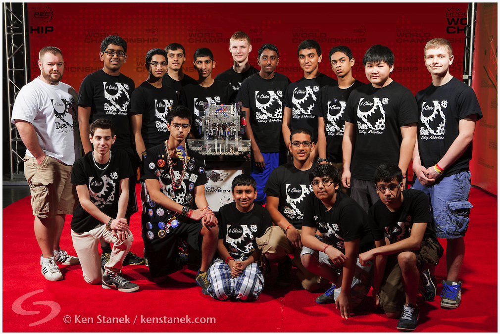
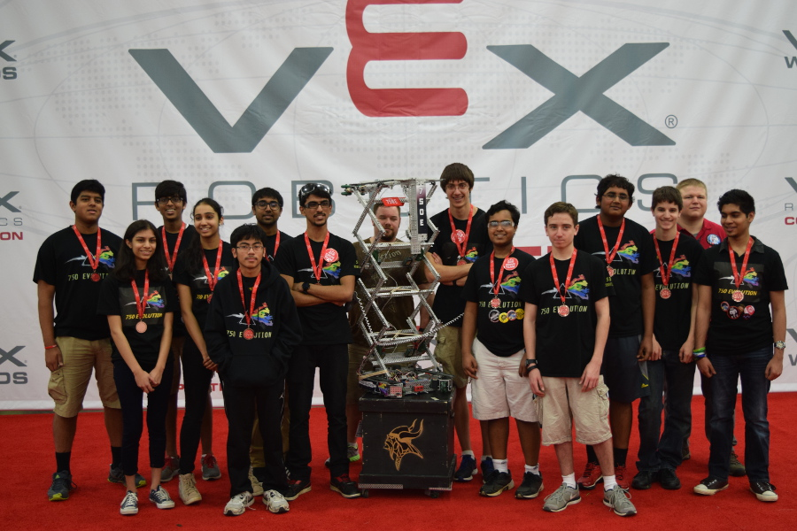

Building a robot may sound like it may only be of interest for certain types of individuals with specific technical and programming abilities, however, experience leads us to believe that real success comes from students with a wide variety of talents and a broad base of interests working together toward achieving a particular goal.
We are proud to announce that we started a co-curricular Robotics program at South
Brunswick High School in the Fall of 2012. VEX Robotics Competition (VRC) is an international program for middle and high school students that has as its goal to engage student participants in the study of science, technology, engineering, and math (STEM) through a competition in which students build innovative robots to solve a challenge. Through the competition, students are expected to devise creative solutions to difficult
problems, work as a team, learn sportsmanship, communicate effectively, and build
leadership skill.
We were fortunate to attract two advisors, who are passionate about fostering in students
those skills essential to be successful. They have done an amazing job of coaching our
students.
In our first year we fielded four teams. Our teams competed in local, regional and state level
tournaments, and one of our teams qualified for the World Championship held in
Anaheim, California in the spring. Below is a picture of that team.

(Our advisor Michael Snook is not in the picture, but you can find the assistant advisor TJ
Fawcett on the far left of the picture.)
In the 2014-2015 season, teams C, E, and W all qualified for the state competition. Team
750E qualified for the World Champoinship held in Louisville, Kentucky.

We aim to increase the number of student participants in the club and encourage students
to engage in developing both hard and soft skills necessary for being successful in school,
college and the workplace.